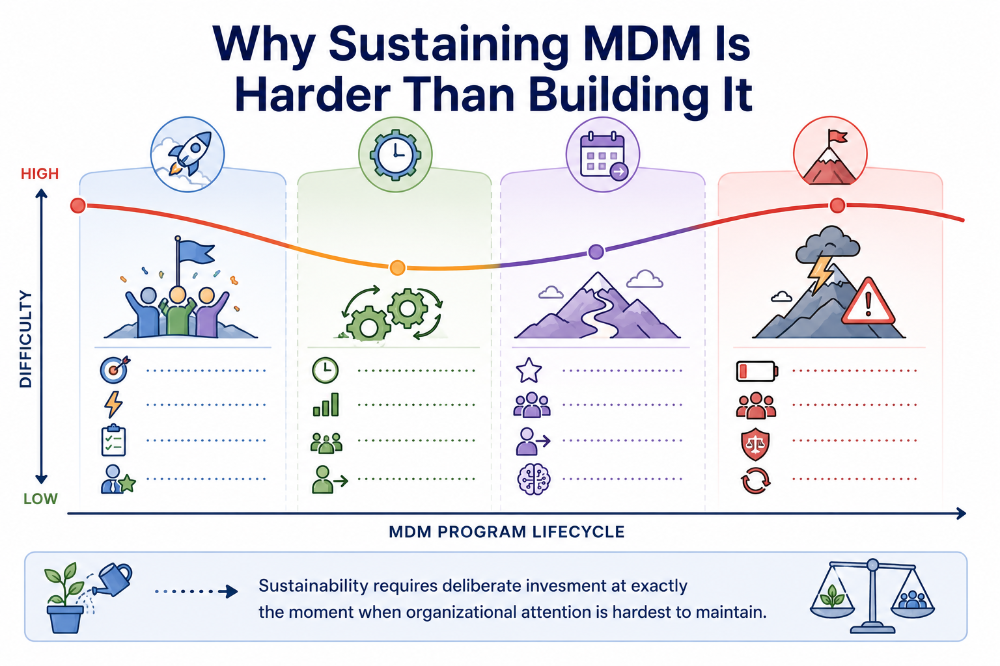
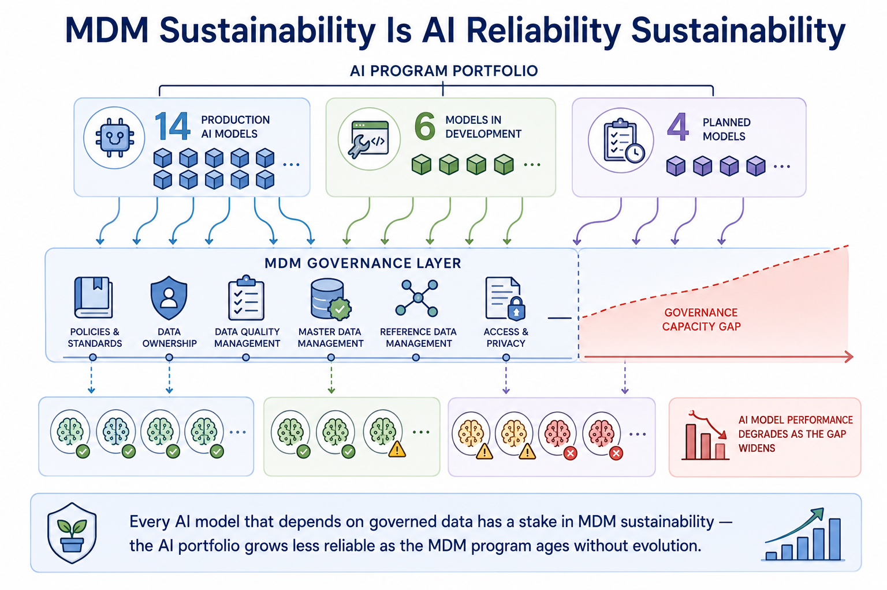
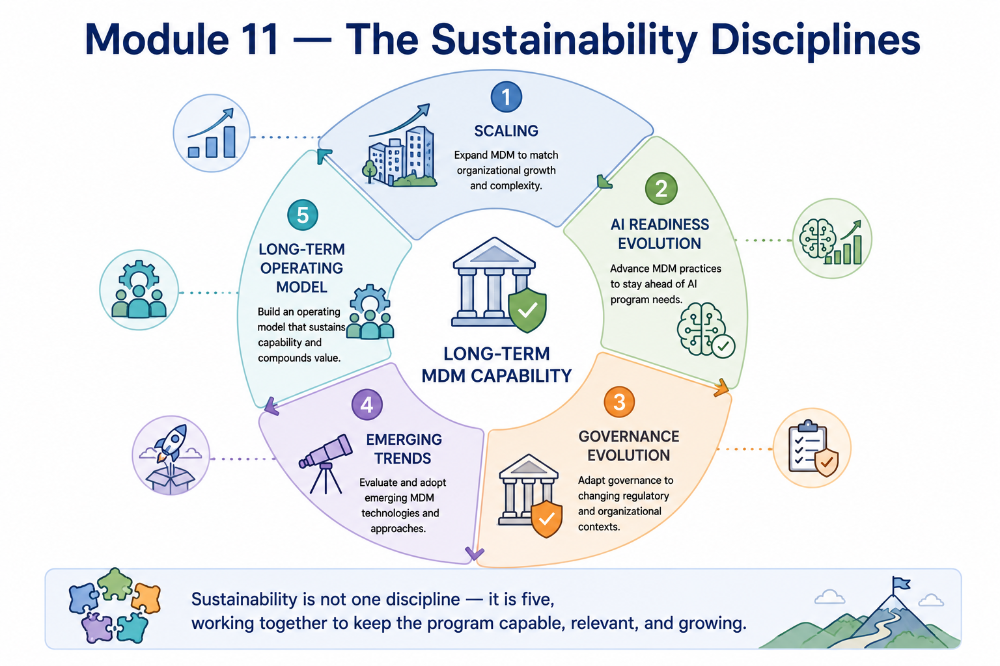

Sustaining MDM
Module support notes
Why Sustainability Is the Hardest MDM Discipline
Sustainability is the hardest MDM discipline because it requires sustained organizational investment at exactly the moment when the program is least newsworthy. Implementation generates organizational energy — kickoffs, milestones, go-live events. Operations settles into a rhythm that, if well-designed, runs without drama. By year two or three, MDM has become background infrastructure — essential but invisible — and the organizational attention that sustained it through implementation has moved to the next initiative.
Maintaining the governance commitment, operational investment, and continuous improvement discipline required to keep the program evolving requires deliberate effort to keep MDM visible as a strategic capability rather than allowing it to fade into the category of things that are assumed to be working.
Warning
Sustainability requires deliberate investment at exactly the moment when organizational attention is hardest to maintain. Year four is typically the difficulty peak — governance fatigue, capacity strain, regulatory changes requiring adaptation, and original team members who have moved on, all without the organizational energy of a new program launch. Plan for this moment before it arrives, not after the degradation it produces becomes visible.

The AI Sustainability Connection
As organizations' AI portfolios grow, the stakes of MDM sustainability increase proportionally. Each new production AI model adds a dependency on governed master data — a dependency that is invisible when the MDM program is performing well and dramatically visible when it isn't.
Organizations that treat MDM sustainability as a data management concern separate from their AI operations consistently discover the connection when AI model performance degrades due to quality drift that nobody caught because the monitoring and governance practices designed for a smaller AI portfolio were never scaled to match its current size.
Note
MDM sustainability is AI reliability sustainability. Every AI model that depends on governed data has a stake in MDM sustainability — the AI portfolio grows less reliable as the MDM program ages without evolution. A governance capacity gap that develops as the AI portfolio grows faster than governance scales is not a data management problem — it is an AI program risk that will show up as model performance degradation across every model in the portfolio simultaneously.

Module 11 covers sustainability as five disciplines that work together to keep the program capable, relevant, and growing as the organization and its AI ambitions evolve around it.
